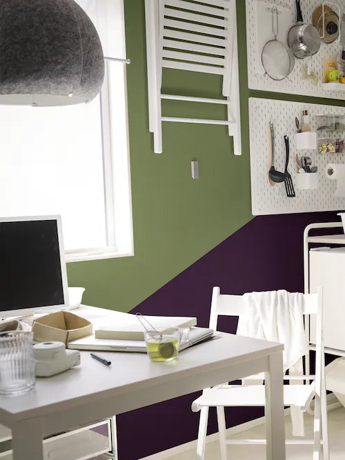
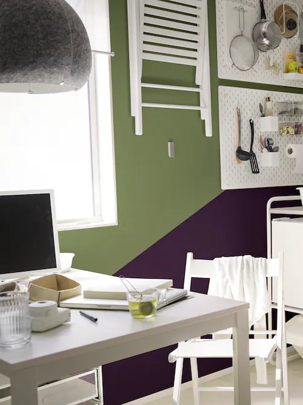

Keuken
Keukens voor elk budget
Klik op je favoriete keukenstijl om meer te bekijken over METOD en de bijbehorende keukendeuren en ladefrontjes. Er zit altijd een optie bij die past bij jou en je budget. Personaliseer alles naar wens in onze keukenplanner.


vind de keuken die bij je past


Nieuwe Verlaagde Prijs
We hebben weer meerdere producten in prijs verlaagd. ekijk snel of je favoeriete keuken producten nog betaalbaarder zijn geworden.
Bekijk snel de productenEr is geen keuken als die van jou
Ontwerp vandaag nog je droomkeuken in onze keukenplanner of laat onze keukenexperts je online helpen, of in een IKEA-vestiging naar keuze.


Keuken(s) nodig en je bent zakelijke klant?
Ook voor bedrijven staan we klaar om te helpen! Bekijk keukenontwerp voorbeelden en ideeën voor diverse bedrijfstypes. Lees verder en ontdek wat het IKEA for Business team voor je kan betekenen.
Bekijk keukens voor bedrijvenMaak je keuken af


Tips om te beginnen aan je keuken


Keuken instalatie
laat je keuken proffesioneel installeren
lees meerApparatuur instalatie
laat je keuken proffesioneel installeren
lees meerTransport & bezorging
laat je keuken proffesioneel installeren
lees meerGarantie
laat je keuken proffesioneel installeren
lees meerRetour- & recycleservice
Met de IKEA retourservice nemen we je oude keuken mee
lees meerShop de look
Ideeën op basis van je recent bekeken producten


 



Veelgestelde vragen
Typ je zoekterm in de zoekbalk hieronder. Voor montagehandleidingen, specifieke producten of artikelnummers, gebruik je de zoekbalk bovenaan onze website.
Hoe bestel ik een maatwerkblad of wandpaneel
Daar helpen ze onze keukenspecialisten je graag bij ! Voor op maat gemaakte artikelen is het natuurlijk extra belangrijk dat alles tot in...
lees meerKan ik mijn planafspraak wijzigen of annuleren ?
Soms komt er wat tussen, en dat snappen wij. Daarom kan je via een link die je in de bevestigings e-mail...
lees meerOp welke manier kan ik mijn keuken betalen?
Je kan keuken bij IKEa op verschillende manieren betalen. Zowel direct in de winkel,per bankoverschrijving of zelfs bij de levering...
lees meerKan ik een IKEA keuken betalaen uit mijn bouwdepot of anders financieren
JVia de keukenafdelingn van onze IKEA vestiging zijn verschillende mogelijkheden om een keuken te betalen. Overleg met een keukenmedewerker over de...
lees meer